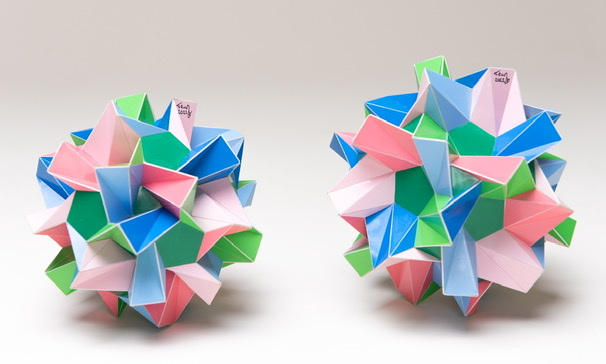

Big Brother and Sister

Picture copyright by PhotoArt Studio Hörby
These models were built in 2022 and their maximum dimensions are 13.5 cm x 13.5 cm x 13.5 cm for big brother and 13 cm x 13 cm x 13 cm for big sister.
These polyhedra consist of regular heptagons that are allowed to be folded over diagonals. There are different ways in which you can fold a regular heptagon and for these polyhedra the folding is done in a 'W' shape.
Both polyhedra are quite similar and quite different at the same time. Around one type of symmetry axis the heptagons are arranged around the regular pentagons or triangles as a dish, while for the other type of symmetry axis they are aranged as a propeller. In both the models the role of the axes are exchanged. These models have the rotational symmetries from a dodecahedron (or icosahedron). A same kind of pair can be found for the cube (or octahedron) symmetry. Models of those can be found here.
These models were quite hard to glue together. I built big sister first. Halfway it was already getting hard and I thought that it would be even harder to finish, but closer to the end it became easier instead. Big brother went a lot easier when I was halfway and I thought it would be the easier model, but towards the end there was quite some tension that made the model collapse a bit and it became really hard in the end. To solve the problem I prepared a pentagon with five triangles attached already while leaving gaps for the last five isosceles triangles. This way I could straighten out the model through those 5 gaps, while gluing on the part with six pieces. That turned out to be a good strategy. In the end this was one of the hardest models models I built.
I think they both have a pleasing shape and they form a nice pair. The choice of which one is brother and which one sister is based on the following: the propeller with three blades reminds me of a Y chromosome (brother) while for little sister there are four which reminds me of an X chromosome (sister). For big sister there are five, which means that big sister would be kind of a super woman.
Last Updated
2022-07-16